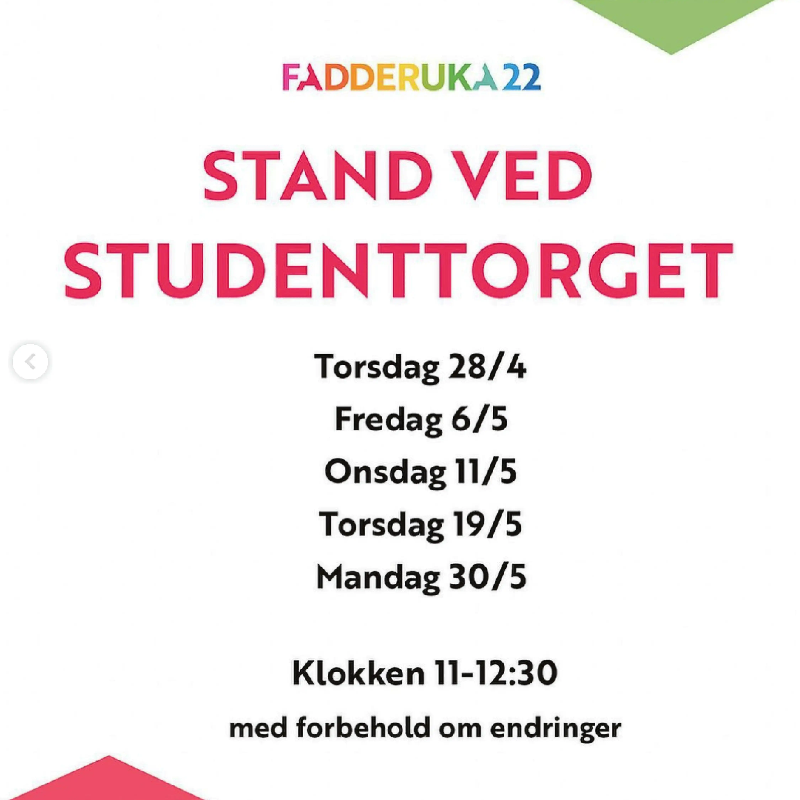
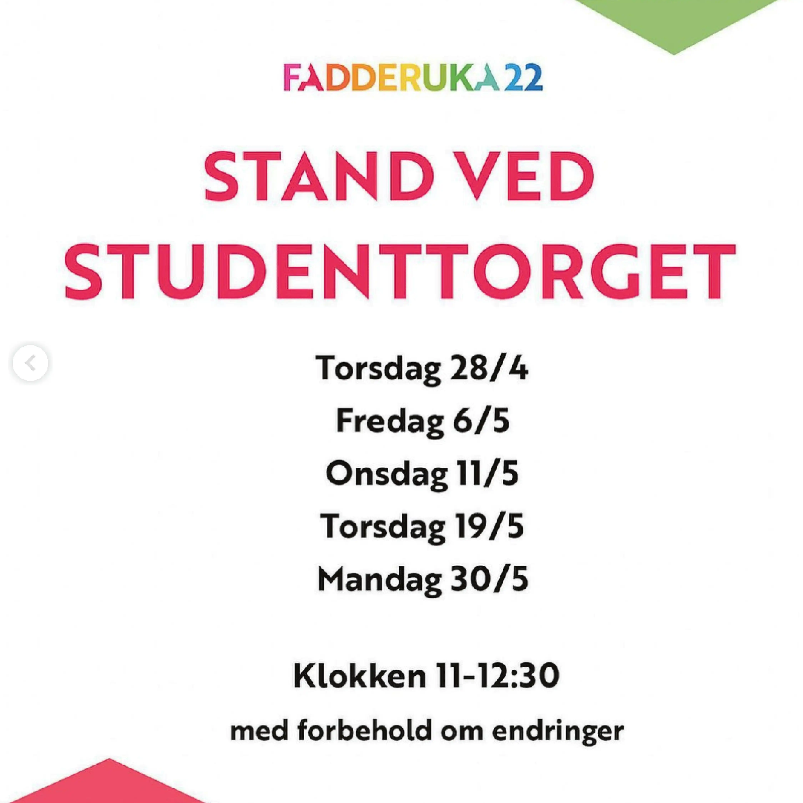

Arrangement
Fadderuka 2023
Frivilligarbeid
Våren 2023 fikk jeg prøve meg som grafisk ansvarlig som en del av fadderstyret til NTNU Gjøvik. Fadderuka på Gjøvik har allerede et fargepalett med regnbuens farger, og de ønsket å beholde disse fargene. Derfor brukte jeg det tidligere designet som utgangspunkt, men designet både en ny logo og et nytt firkantmønster.
I løpet av prosjektet designet jeg blant annet flere typer instagram-innlegg, facebook bannere og noen plakater.
Verktøy: Illustrator


Innsiktsarbeid
Innsiktsarbeidet til dette prosjektet gikk ganske raskt, og jeg brukte for det meste tid på å se på hvordan designet har sitt tidligere, og var også innom instagrammen til et par andre studiesteder, for å se hvordan andre pleier å gjøre det.
Tidligere design
Designet som fadderuka på Gjøvik brukte før jeg startet, har vært relativt lik alle de tidligere årene, og det virker ikke som at det ikke har vært en grafisk designer involvert med tanke på luft og possisjonen av de ulike elementene i forhold til hverandre.
 

Designprosess
Jeg startet selve designprosessen med å utvikle en logo, før jeg gikk videre til selve designet
Logo varianter
Når jeg drev med innsiktsarbeid la jeg merke til at logoen til fadderuka på Gjøvik har vært den samme veldig lenge, så jeg fikk tillatelse til å utvikle en ny versjon. Resultatet ble en logo med rundere kanter på bokstavene, og et hjerte inni alle a'ene.
Her brukes logoen i alle fargene fra paletten, men alle tre versjonene kan også brukes i enten helt hvit eller sort.
Utvikling av profilbilde
I tillegg utviklet jeg et nytt profilbilde, fordi det gamle inneholdt den gamle logoen. Her testet jeg ut litt forskjellig, men fant fort ut at det var best å holde det så enkelt som mulig, og bare bruke logoen uten altfor mange andre detaljer.
Utvikling av selve designet
Deretter startet jeg på selve designet. Her startet jeg med å teste designet på arrangement-innlegg, og testet ulike detaljer med rosa og hvit, fordi idéen min fra starten av var at arrangement-innleggende skulle ha hvite detaljer og ulike bakgrunnsfarger basert på hvilken dag de foregikk.
Som dere ser testet jeg også med hvit bakgrunn og farga detaljer, men jeg så for meg at dette kom til å bli litt kjedelig, ettersom det hadde blitt mange hvite innlegg på rad, og dermed en litt kjedelig feed.


Ferdig design av arrangement-innlegg
Utvikling av info-innlegg
Jeg tok utgangspunkt i firkantmønsteret jeg brukte på arrangement-innleggene, og prøvde å designe en løsning for hvordan info-innlegg burde se ut. Disse bør skille seg fra arrangement-innleggene, slik at man lett ser forskjell på hva slags type innlegg det er. Derfor endte jeg opp med å ha hvit bakgrunn, og bruke hele fargepalettet på mønsteret.
Eksempel på hvordan et ferdig info-innlegg ser ut (instagram karusell)


Utvikling av artist-innlegg
Styret ønsket også at artist-innleggene skulle skille seg fra de andre arrangementene, i et forsøk på å promotere konsertene bra. Jeg tok utgangspunkt i hvordan arrangement-innleggene ser ut, men la til et bilde av artisten, og prøvde å designe det på en litt annen måte med detaljer osv.

Ferdig design av artist-innlegg
Utvikling av fadderukeplanen
Derett utviklet jeg en plan med oversikt over alt som skjer i løpet av Fadderuka på Gjøvik. Her har jeg valgt å fargekode de ulike dagene, for å gjøre det enklere å skille mellom hvilke arrangementer som foregår på samme dag.

Utvikling av temafest plakaten
Til slutt utviklet jeg plakater til de to konsertene og temafesten vi skulle ha. Her ser dere prosessen med temafest plakaten. Temaet var Wicked Wonderland, så jeg prøvde å være kreativ med bakgrunnen og prøvde å skape en slags «Alice in Wonderland» eller hyypnose vibe.

Ferdig design av temafest plakaten
Til slutt endte jeg opp med en blanding av fargene i fargepaletten i bakgrunn, og en lilla spiral over. Jeg la også til kostyme inspirasjon, for å gi plakaten en liten ekstra touch.
Ferdig konsert plakater
Jeg lagde også plakater for å promotere åpnings- og avslutningskonserten.
Stand-up innlegg og billetter
Til slutt ønsket styret også å ha et innlegg som skilte seg ut for å promotere stand-up arrangementet i litt samme stil som artist-innleggene. Det var også et ønske om fysiske billetter til avslutningskonserten med Arif, som kunne gis bort på konkurranser og lignende